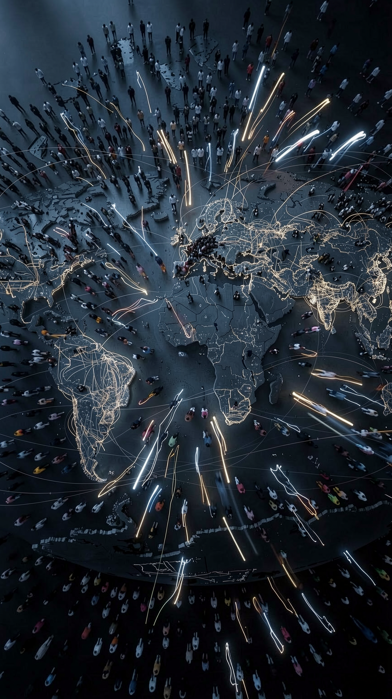
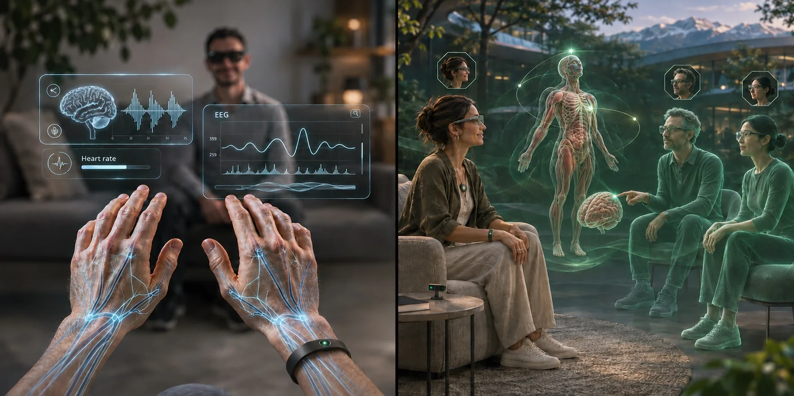
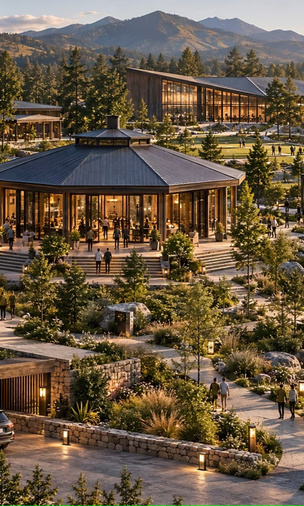

Методы
Собственный метод NeuroAttention и подходы других авторов и школ. Объединяем опыт специалистов и расширяем базу методов человеческой адаптации.
Исследования · Образование · Реабилитация · Экосистема
Человек не успевает адаптироваться к её скорости.
Сегодня адаптация к изменениям становится главным условием здоровья и качества жизни.
Проблема и факты
Создав нагрузку, к которой человеческий организм не был подготовлен в ходе эволюции. Это привело к масштабным последствиям на всех уровнях.

Масштаб изменений, к которым мы не готовы
С чего начинается человеческая адаптация?
Найти отправную точкуТо, чему мы уделяем внимание, влияет на наши решения, действия и направление нашей жизни.
Выбирать, на чём сосредоточиться.
Замечать, куда оно направлено и что заставляет его переключаться.
Удерживать, переключать и распределять внимание.
Видеть, как люди и технологии направляют наше внимание — и в чьих интересах.
Вместе определять, что заслуживает внимания: в семье, команде и обществе.
Основатель DOM Institute Nick Ivanov разработал NeuroAttention — авторский метод развития внимания и саморегуляции. Он объединяет работу с телесными ощущениями, эмоциями и мыслями и применяется в обучении, восстановлении и адаптации к изменениям здоровья и жизненных обстоятельств.
За годы практики накоплен опыт работы с разными задачами:
Этот опыт становится одной из основ DOM Platform — среды, в которой мы объединяем методы, инструменты наблюдения, обучение и совместную работу.
DOM · 01
Операционная система для человеческой адаптации
Карта показывает, как события, мысли, эмоции и ощущения в теле связаны между собой: что отнимает у вас силы, что помогает их восстановить и что вы можете изменить.
Подойдёт даже едва заметное ощущение.
Интенсивность ощущения: 1 — едва заметно, 10 — очень сильно.
Выберите число.
Начните с выбора ощущения.
Выберите эмоцию или чувство, даже если оно выражено слабо. «Спокойствие» тоже подходит.
Выберите близкую формулировку или добавьте свою. Здесь нет правильного ответа.
Потяните точки. Затем нажмите подсвеченную связь.
Вы собрали ощущение, эмоцию и мысль в одном наблюдении. Теперь его можно рассмотреть со стороны.
В личном кабинете можно сохранять наблюдения, возвращаться к ним и сопоставлять их со своим профилем.
Войти или зарегистрироваться. Эта пробная запись не переносится автоматически.Попробуйте инструменты текущего онлайн-прототипа. Записи в этом примере остаются только в вашем браузере до перезагрузки страницы.
DOM · 02
Виртуальная и дополненная реальность

13 показателей в трёх группах. Их сочетание — профиль адаптации: ваши опоры и направления развития.
Выберите группу показателей:
Вы выбрали направление в учебном примере. Чтобы узнать свои значения и выбрать подходящую программу, войдите или зарегистрируйтесь и пройдите диагностику.
Учебный пример — не результат вашей диагностики.
Типология DOM связывает характеристики тела, внимания и взаимодействия с миром с практикой NeuroAttention. Диагностика помогает определить отправную точку, а методы, протоколы и программы — выбрать дальнейшую работу.
Собственный метод NeuroAttention и подходы других авторов и школ. Объединяем опыт специалистов и расширяем базу методов человеческой адаптации.
Протоколы тренировок и практик для развития внимания, саморегуляции и адаптивности. С понятными шагами и образовательными материалами.
Развиваем программы по четырём направлениям: старший возраст и дома престарелых; подростки и вход во взрослую жизнь; взаимодействие с ИИ; адаптация бизнеса через автоматизацию и цифровые инструменты.
Люди, технологии и пространства — единая экосистема DOM
Объединяем людей, знания и технологии. Вместе создаём физическую и цифровую среду, которая помогает адаптироваться к меняющемуся миру и раскрывать свой потенциал — как отдельным людям, так и человечеству в целом.
Нажмите на подсвеченный раздел
Нажмите на подсвеченный раздел
DOM связывает исследования, образование, практику и технологии в живой цикл: опыт человека становится источником знаний, а знания помогают совершенствовать программы и среду. Так личное развитие превращается в новые связи и решения, полезные обществу.
Следующий шаг — DOM Space: спроектированная среда, в которой люди будут учиться, восстанавливаться, исследовать и вместе создавать новые решения.
Открыть DOM SpaceИсследуем осознанную адаптацию человека и человечества. Отбираем и проверяем знания, методы и инструменты, которые помогают улучшать жизнь и формировать будущее.
Создаём основу образования в осознанной адаптации: навыки внимания и саморегуляции для себя, подготовка специалистов нового профиля — для людей и сообществ.
Восстановление тела, психики и способностей после неблагоприятного влияния среды. Диагностика, специалисты и данные — в персональных программах онлайн и реабилитационном комплексе будущего кампуса.
Создаём технологическую основу осознанной адаптации: от действующего ИИ-агентного ядра до XR-сред и собственных устройств. Новые инструменты исследований и качественной интеграции технологий в жизнь.
Вместе осознанно строим будущее. Помогаем раскрывать уникальный генетический и личностный потенциал каждого — через самореализацию, полезную человеку и обществу.
Помогаем участникам превращать навыки и идеи в жизнеспособные проекты, адаптировать действующий бизнес к меняющимся условиям и создавать общую экономическую ценность.
DOM INSTITUTE · 03
Одно пространство. Четыре измерения.
Первое физическое пространство DOM Institute планируется в США. Ищем площадку и разрабатываем проект; приём гостей ещё не открыт.
Нажмите на подсвеченный раздел
Архитектура, технологии, природа и отношения проектируются как части одной системы. В этой среде мы сможем проверять гипотезы, наблюдать опыт человека и группы и переносить проверенные решения в другие центры, сообщества и города.
Понять запрос и состояние → составить программу → прожить её в реальной среде → оценить изменения → перенести навыки и поддержку в обычную жизнь.
Общий восьмиугольный зал · лаборатории и аудитории · консультации · движение и тренировки · спа и термальные практики · отдельный добровольный Dark Retreat · мастерские · проживание и семейные пространства · природа и забота о земле. Всё — часть проектируемой среды; форматы, допуск и сопровождение разрабатываются отдельно.

Формируем междисциплинарные направления. Предлагаем исследователям, преподавателям и создателям проектов развивать их вместе.
Как людям и обществам адаптироваться к ускоряющимся изменениям и вместе осознанно формировать будущее?
Как продлить годы высокого качества жизни? Разрабатываем исследования и программы, объединяющие внимание, движение, когнитивную активность, работу специалистов и повседневную среду. Цель — поддерживать ясность мышления, подвижность, самостоятельность и вовлечённость людей старшего возраста, в том числе в домах престарелых.
Предложить исследованиеПриглашаем исследователей, преподавателей, инженеров, специалистов и инициаторов проектов создавать направления института, предлагать исследования и превращать знания в решения для человеческой адаптации.
Четыре приоритета разработки и исследований. Набор и условия отдельных пилотов будут объявлены отдельно; результаты ещё не заявлены.
DOM · 05
Агентство адаптации и развития
Помогаем бизнесу меняться, а людям — превращать навыки, знания и идеи в проекты, продукты и услуги. Технологии, работа с командой и реализация результатов связаны в одном процессе.
ИИ и автоматизация, цифровые инструменты и рабочие процессы. Вместе с этим — внимание к нагрузке, навыкам саморегуляции и качеству взаимодействия команды.
Помогаем оформить и представить проекты, услуги, знания и авторские работы. Развиваем экспозицию и аукционные форматы, чтобы создатели находили аудиторию и получали ресурсы для продолжения работы.
Разрабатываем знак качества осознанности и адаптации: понятные критерии ценности для людей, работы с командой и уместного применения технологий.
DOM · 06
Учиться, исследовать и создавать вместе
Создаём сообщество участников, специалистов, исследователей и авторов проектов, которых объединяет интерес к человеческой адаптации, осознанности и качеству жизни.
Вместе учиться и обмениваться опытом, находить специалистов и партнёров, исследовать методы и создавать совместные проекты. Цифровая среда, XR и будущий кампус помогают поддерживать эти связи на расстоянии и при личных встречах.
Команда
Founder & System Architect
Создатель метода NeuroAttention. Исследователь внимания и саморегуляции, более 12 лет разработки метода.
Co-founder & CTO
Руководит архитектурой XR-платформы, разработкой технологий и системами обучения.
Creative Director
Проектирует среды NeuroAttention, интегрируя эстетику и восприятие.
Media Director
Руководит производством контента, медиа-системами и выражением бренда.
Проект также поддерживается командой специалистов и партнёров в области исследований, технологий и медиа.